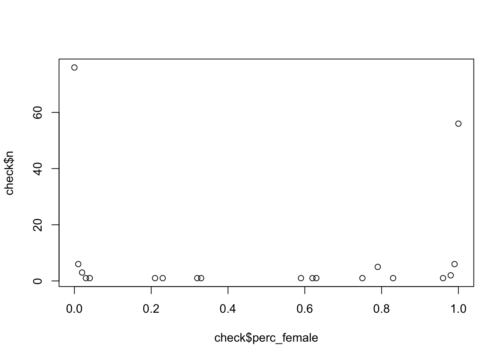

Data preparation
Prep
Start with a clean workspace to prepare all the data.
rm(list = ls())
Functions
Activating the user defined functions. Thanks to Jochem Tolsma for
providing these during the course.
fpackage.check <- function(packages) {
lapply(packages, FUN = function(x) {
if (!require(x, character.only = TRUE)) {
install.packages(x, dependencies = TRUE)
library(x, character.only = TRUE)
}
})
}
fsave <- function(x, file = NULL, location = "./data/processed/") {
ifelse(!dir.exists("data"), dir.create("data"), FALSE)
ifelse(!dir.exists("data/processed"), dir.create("data/processed"), FALSE)
if (is.null(file))
file = deparse(substitute(x))
totalname <- paste(location, file, ".rda", sep = "")
save(x, file = totalname)
}
fload <- function(filename) {
load(filename)
get(ls()[ls() != "filename"])
}
fshowdf <- function(x, ...) {
knitr::kable(x, digits = 2, "html", ...) %>%
kableExtra::kable_styling(bootstrap_options = c("striped", "hover")) %>%
kableExtra::scroll_box(width = "100%", height = "300px")
}
fcolnet <- function(data = scholars, university = "RU", discipline = "sociology", waves = list(c(2015,
2018), c(2019, 2023)), type = c("first")) {
# step 1
demographics <- do.call(rbind.data.frame, data$demographics)
demographics <- demographics %>%
mutate(Universiteit1.22 = replace(Universiteit1.22, is.na(Universiteit1.22), ""), Universiteit2.22 = replace(Universiteit2.22,
is.na(Universiteit2.22), ""), Universiteit1.24 = replace(Universiteit1.24, is.na(Universiteit1.24),
""), Universiteit2.24 = replace(Universiteit2.24, is.na(Universiteit2.24), ""), discipline.22 = replace(discipline.22,
is.na(discipline.22), ""), discipline.24 = replace(discipline.24, is.na(discipline.24), ""))
sample <- which((demographics$Universiteit1.22 %in% university | demographics$Universiteit2.22 %in%
university | demographics$Universiteit1.24 %in% university | demographics$Universiteit2.24 %in%
university) & (demographics$discipline.22 %in% discipline | demographics$discipline.24 %in% discipline))
demographics_soc <- demographics[sample, ]
scholars_sel <- lapply(scholars, "[", sample)
# step 2
ids <- demographics_soc$au_id #openalex IDs
nwaves <- length(waves)
nets <- array(0, dim = c(nwaves, length(ids), length(ids)), dimnames = list(wave = 1:nwaves, ids,
ids))
dimnames(nets)
# step 3
df_works <- tibble(works_id = unlist(lapply(scholars_sel$work, function(l) l$id)), works_author = unlist(lapply(scholars_sel$work,
function(l) l$author), recursive = FALSE), works_year = unlist(lapply(scholars_sel$work, function(l) l$publication_year),
recursive = FALSE))
df_works <- df_works[!duplicated(df_works), ]
# step 4
if (type == "first") {
for (j in 1:nwaves) {
df_works_w <- df_works[df_works$works_year >= waves[[j]][1] & df_works$works_year <= waves[[j]][2],
]
for (i in 1:nrow(df_works_w)) {
ego <- df_works_w$works_author[i][[1]]$au_id[1]
alters <- df_works_w$works_author[i][[1]]$au_id[-1]
if (sum(ids %in% ego) > 0 & sum(ids %in% alters) > 0) {
nets[j, which(ids %in% ego), which(ids %in% alters)] <- 1
}
}
}
}
if (type == "last") {
for (j in 1:nwaves) {
df_works_w <- df_works[df_works$works_year >= waves[[j]][1] & df_works$works_year <= waves[[j]][2],
]
for (i in 1:nrow(df_works_w)) {
ego <- rev(df_works_w$works_author[i][[1]]$au_id)[1]
alters <- rev(df_works_w$works_author[i][[1]]$au_id)[-1]
if (sum(ids %in% ego) > 0 & sum(ids %in% alters) > 0) {
nets[j, which(ids %in% ego), which(ids %in% alters)] <- 1
}
}
}
}
if (type == "all") {
for (j in 1:nwaves) {
df_works_w <- df_works[df_works$works_year >= waves[[j]][1] & df_works$works_year <= waves[[j]][2],
]
for (i in 1:nrow(df_works_w)) {
egos <- df_works_w$works_author[i][[1]]$au_id
if (sum(ids %in% egos) > 0) {
nets[j, which(ids %in% egos), which(ids %in% egos)] <- 1
}
}
}
}
output <- list()
output$data <- scholars_sel
output$nets <- nets
return(output)
}
Loading data
Activating the packages needed.
packages <- c("tidyverse", "scholar", "openalexR", "rvest", "jsonlite", "RSiena", "RSelenium", "rvest",
"lavaan", "xml2", "kableExtra", "devtools", "igraph", "network", "sna", "ggraph", "visNetwork", "threejs",
"networkD3", "RsienaTwoStep")
fpackage.check(packages)
#> [[1]]
#> NULL
#>
#> [[2]]
#> NULL
#>
#> [[3]]
#> NULL
#>
#> [[4]]
#> NULL
#>
#> [[5]]
#> NULL
#>
#> [[6]]
#> NULL
#>
#> [[7]]
#> NULL
#>
#> [[8]]
#> NULL
#>
#> [[9]]
#> NULL
#>
#> [[10]]
#> NULL
#>
#> [[11]]
#> NULL
#>
#> [[12]]
#> NULL
#>
#> [[13]]
#> NULL
#>
#> [[14]]
#> NULL
#>
#> [[15]]
#> NULL
#>
#> [[16]]
#> NULL
#>
#> [[17]]
#> NULL
#>
#> [[18]]
#> NULL
#>
#> [[19]]
#> NULL
#>
#> [[20]]
#> NULL
Enabling the connection to OpenAlex API.
# make yourself known to openAlex
options(openalexR.mailto = "lucan.bovens@home.nl")
Loading the original datafile.
scholars <- fload("./data/processed/scholars_20240924.rda")
Making sure to save the three Sociology departments. I chose Radboud
University (RU), Utrecht University (UU) and the University of
Groningen. There are two waves: 1. 2015-2018; 2. 2019-2023. The type of
ties is first, meaning the first author is assumed to be the one to
initiate ties.
# Save the output of your function, sociology departments
socdata <- fcolnet(data = scholars, university = c("RU", "UU", "RUG"), discipline = c("sociology"), waves = list(c(2015,
2018), c(2019, 2023)), type = c("first")) #First instead of all to check direction of ties
Finding the ego characteristics (df_ego).
# Let us find ego characteristics. first fish out the data
df <- socdata$data
# same complicated structure as 'scholars' thus first make a dataframe from the list in which all
# info was saved.
df_ego <- do.call(rbind.data.frame, df$demographics)
# DO NOT MESS UP THE ORDER! THUS IF YOU JOIN THIS DATA WITH YOUR OWN DATA CHECK THAT ORDER REMAINED
# THE SAME!!
View(df_ego)
demographics <- do.call(rbind.data.frame, scholars$demographics)
universities_1_2022 <- unique(demographics$Universiteit1.22)
universities_2_2022 <- unique(demographics$Universiteit2.22)
universities_1_2024 <- unique(demographics$Universiteit1.24)
universities_2_2024 <- unique(demographics$Universiteit2.24)
Adding variables to
dataset
H-index
The following syntax adds the H-index, as well as some other metrics
such as the i10-index, the number of works each authors has and the
total times an author has been cited by others. The (adjusted) H-index
is the main variable for this study.
# Add h-index and i10-index to df_ego dataframe
df_ego <- df_ego %>%
mutate(h_index = NA_real_, i10_index = NA_real_, works_count = NA_real_, cited_by_count = NA_real_)
# Get H-index and i10-index, using openalex API (see link) Additionally get works count and
# cited_by count for possible future use
get_openalex_metrics <- function(openalex_id) {
url <- paste0("https://api.openalex.org/authors/", openalex_id)
author_data <- tryCatch({
jsonlite::fromJSON(url)
}, error = function(e) {
message(paste("Error fetching data for OpenAlex ID:", openalex_id)) #After googling for a bit, found this to know if something is running forever or whether errors show up
return(NULL)
})
if (!is.null(author_data)) {
h_index <- author_data$summary_stats$h_index
i10_index <- author_data$summary_stats$i10_index
works_count <- author_data$works_count
cited_by_count <- author_data$cited_by_count
return(list(h_index = h_index, i10_index = i10_index, works_count = works_count, cited_by_count = cited_by_count))
} else {
return(list(h_index = NA, i10_index = NA, works_count = NA, cited_by_count = NA))
}
}
# Loooop (may take a while)
for (i in 1:nrow(df_ego)) {
openalex_id <- df_ego$au_id[i]
metrics <- get_openalex_metrics(openalex_id)
df_ego$h_index[i] <- metrics$h_index
df_ego$i10_index[i] <- metrics$i10_index
df_ego$works_count[i] <- metrics$works_count
df_ego$cited_by_count[i] <- metrics$cited_by_count
}
View(df_ego)
Gender
Thanks to the gender-scraper developed by Niels Vullings, I was able
to add gender as a control variable.
# Credits to Niels Vullings
# Extract first names from df_ego
df_ego <- df_ego %>%
mutate(first_name = sapply(strsplit(Naam, " "), `[`, 1))
# Connection errors may occur, if so, restart
gender_scraper.NV <- function(names = "names element", web_page = "https://nvb.meertens.knaw.nl/naam/is/") {
names$first_name <- sapply(strsplit(names$Naam, " "), `[`, 1) # Extract first names from the ego characteristics dataset
names$male <- NA
names$male <- NA
names$female <- NA
for (i in 1:nrow(names)) {
web_page <- read_html(paste0("https://nvb.meertens.knaw.nl/naam/is/", names$first_name[i]))
table <- web_page %>%
rvest::html_elements("body") %>%
rvest::html_elements("table") %>%
rvest::html_table()
if (length(table) == 0) {
names$male[i] <- NA
names$female[i] <- NA
} else {
names$male[i] <- as.numeric(ifelse(table[[1]][[2, 3]] == "--", 0, table[[1]][[2, 3]]))
names$female[i] <- as.numeric(ifelse(table[[1]][[6, 3]] == "--", 0, table[[1]][[6, 3]]))
}
} # End for-loop
names <- names %>%
mutate(perc_female = case_when(is.na(female) & is.na(male) ~ NA, is.na(female) ~ 0, is.na(male) ~
1, TRUE ~ round((female/(male + female)), 2))) %>%
select(-male, -female) # Remove intermediate columns
return(names)
}
# Run gender scraper -> df_ego
df_ego <- gender_scraper.NV(names = df_ego, web_page = "https://nvb.meertens.knaw.nl/naam/is/")
View(df_ego)
# Set perc_female to 0 for 'Weverthon'
df_ego <- df_ego %>%
mutate(perc_female = ifelse(first_name == "Weverthon", 0, perc_female))
# Set perc_female to 1 for 'Xingna'
df_ego <- df_ego %>%
mutate(perc_female = ifelse(first_name == "Weverthon", 1, perc_female))
check <- df_ego %>%
count(perc_female)
plot(check$perc_female, check$n)

Gender create
dichotomous
I decided to make gender a dichotomous variable to make it
clearer.
# Dichotomous gender?
df_ego <- df_ego %>%
mutate(genderdich = case_when(perc_female > 0.5 ~ "female", perc_female <= 0.5 ~ "male", TRUE ~ NA_character_))
table(df_ego$genderdich)
#>
#> female male
#> 75 91
# Remove authors whose gender are unknown (NA value)
df_ego <- df_ego %>%
filter(!is.na(genderdich))
View(df_ego)
table(df_ego$genderdich)
#>
#> female male
#> 75 91
Career age
Adding the career age to serve as a factor when creating the new
prestige-index. The below syntax to scrape career age was developed by
Koen Lucas, who I thank.
df_works <- socdata$data$work
# Handy: unnest df_works to get the correct format
df_works <- tibble(works_id = unlist(lapply(df_works, function(l) l$id)),
works_author = unlist(lapply(df_works, function(l) l$author), recursive = FALSE),
works_year = unlist(lapply(df_works, function(l) l$publication_year), recursive = FALSE))
#Continue
df_career_age <- df_works %>%
unnest(works_author) %>% # Unnest tibble (authors) from the (df_works) tibble
filter(au_id %in% df_ego$au_id == TRUE) %>% # authors in df_works should match authors in df_ego
group_by(au_id) %>%
mutate(min_year_pub = min(works_year, na.rm = TRUE), # Initial calculation minimum year
count_pub = n()) %>% # Count number of publications
mutate(first_year_pub = ifelse(count_pub == 1, min_year_pub, # if number of publications = 1, score is min_year_pub
{
filter_year = works_year[works_year != min_year_pub] # Filter min year
mean_pubyear = mean(filter_year, na.rm = TRUE) # Calculate mean excluding min score
valid_year = min(filter_year[filter_year >= (mean_pubyear - 25)], na.rm = TRUE) # Min year -> range mean-25
valid_year # if number of publications is not 1, then score minimum year with first year removed within range mean-25
})) %>%
# this line corrects for the warning of returning infinites that for some reason were not filtered through the first ifelse command
mutate(first_year_pub = ifelse(is.infinite(first_year_pub), min_year_pub, first_year_pub)) %>%
select(au_id, first_year_pub) %>%
distinct(au_id, first_year_pub, .keep_all = TRUE)
# Merge dataframed based on au_id
df_ego <- df_ego %>%
left_join(df_career_age, by = "au_id") %>%
mutate(career_age = 2024 - first_year_pub) # Calculate career age as the difference from 2024
View(df_ego)
Creating new
prestige variable
I decided to create a new prestige variable which takes career age
into account as well. I used the logarithm to get to fairer results.
# If career age 0, change to 1 (to solve the dividing by 0 problem)
df_ego <- df_ego %>%
mutate(adjusted_career_age = ifelse(career_age == 0, 1, career_age))
# Calculate prestige by dividing h-index by the log of career age + 1 (to avoid division by zero
# problems)
df_ego <- df_ego %>%
mutate(prestige_index = h_index/log1p(adjusted_career_age))
View(df_ego)
Missings
I excluded a few missings, based on scholars who had zero works but
had an career age recorded. Since career age is based on the number of
publications, scholars with zero publications could not have an career
age.
df_ego <- df_ego %>%
filter(!(works_count == 0 & !is.na(adjusted_career_age)))
Some final prep
final_scholar_ids <- df_ego$au_id
df <- list(demographics = df_ego %>%
select(au_id, everything()), scholars_oa = df_ego %>%
select(au_id, h_index, i10_index), works = df_ego %>%
select(au_id, works_count, cited_by_count))
sapply(df, nrow) # Should show 164 for each component instead of 171 due to excluding missings
#> demographics scholars_oa works
#> 164 164 164
View(df_ego)
Saving the data
Saving the data so I can use it for the descriptives and
analyses.
# Saving the data
fsave(df_ego, "df_ego_final")
fsave(socdata, "socdata_final")
fsave(df_works, "df_works_final")
